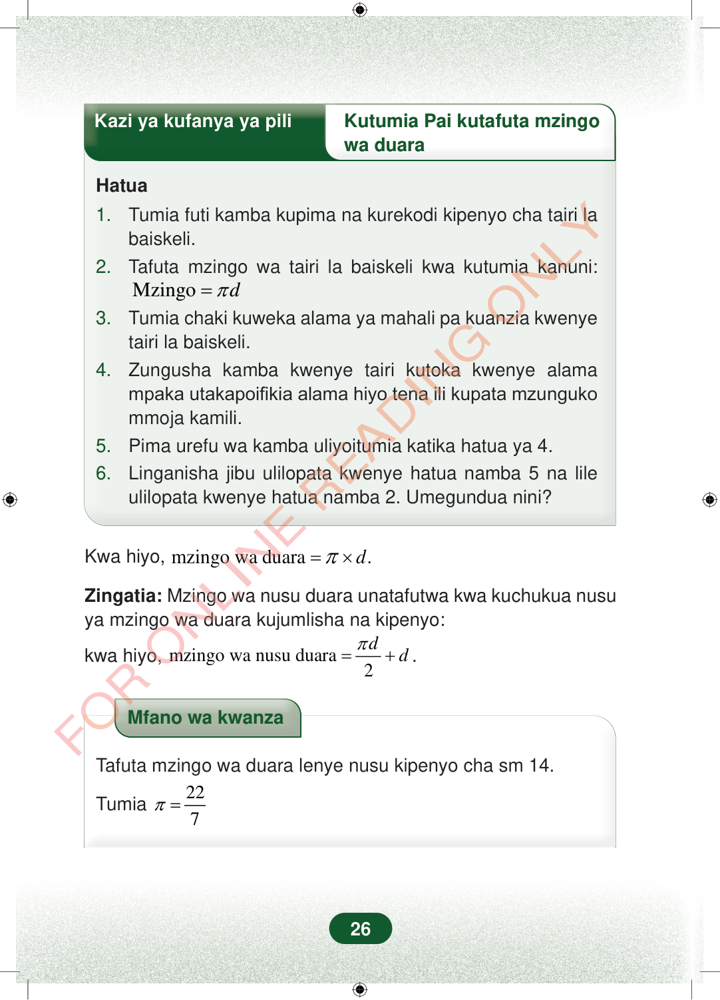

Kazi ya kufanya ya piliKutumia Pai kutafuta mzingowa duaraHatua1.Tumia futi kamba kupima na kurekodi kipenyo cha tairi labaiskeli.2.Tafuta mzingo wa tairi la baiskeli kwa kutumia kanuni:Mzingodπ=3.Tumia chaki kuweka alama ya mahali pa kuanzia kwenyetairi la baiskeli.4.Zungusha kamba kwenye tairi kutoka kwenye alamampaka utakapoifikia alama hiyo tena ili kupata mzungukommoja kamili.5.Pima urefu wa kamba uliyoitumia katika hatua ya 4.6.Linganisha jibu ulilopata kwenye hatua namba 5 na lileulilopata kwenye hatua namba 2. Umegundua nini?Kwa hiyo,mzingo wa duara.dπ=×Zingatia:Mzingo wa nusu duara unatafutwa kwa kuchukua nusuya mzingo wa duara kujumlisha na kipenyo:kwa hiyo,mzingo wa nusu duara2ddπ=+.Mfano wa kwanzaTafuta mzingo wa duara lenye nusu kipenyo cha sm 14.Tumia227π=26
Kazi ya kufanya ya pili Kutumia Pai kutafuta mzingo
wa duara
Hatua
1. Tumia futi kamba kupima na kurekodi kipenyo cha tairi la baiskeli. 2. Tafuta mzingo wa tairi la baiskeli kwa kutumia kanuni: Mzingo d π =
3. Tumia chaki kuweka alama ya mahali pa kuanzia kwenye tairi la baiskeli. 4. Zungusha kamba kwenye tairi kutoka kwenye alama mpaka utakapoifikia alama hiyo tena ili kupata mzunguko mmoja kamili. 5. Pima urefu wa kamba uliyoitumia katika hatua ya 4. 6. Linganisha jibu ulilopata kwenye hatua namba 5 na lile ulilopata kwenye hatua namba 2. Umegundua nini?
Kwa hiyo, mzingo wa duara . d π = ×
Zingatia: Mzingo wa nusu duara unatafutwa kwa kuchukua nusu ya mzingo wa duara kujumlisha na kipenyo:
kwa hiyo, mzingo wa nusu duara 2 d d π = + .
Mfano wa kwanza
Tafuta mzingo wa duara lenye nusu kipenyo cha sm 14.
Tumia 22 7 π =
26
Hatua za kutumia kamba kupima kipenyo cha tairi la baiskeli na kupata mzingo kwa kanuni ya mzingo ni pai mara kipenyo.Kazi ya kufanya ya piliKutumia Pai kutafuta mzingo wa duaraHatua1. Tumia futi kamba kupima na kurekodi kipenyo cha tairi la baiskeli.2. Tafuta mzingo wa tairi la baiskeli kwa kutumia kanuni: Mzingo = <math><mrow><mi>π</mi><mi>d</mi></mrow></math>3. Tumia chaki kuweka alama ya mahali pa kuanzia kwenye tairi la baiskeli.4. Zungusha kamba kwenye tairi kutoka kwenye alama mpaka utakapoifikia alama hiyo tena ili kupata mzunguko mmoja kamili.5. Pima urefu wa kamba uliyoitumia katika hatua ya 4.6. Linganisha jibu ulilopata kwenye hatua namba 5 na lile ulilopata kwenye hatua namba 2. Umegundua nini?Kwa hiyo, mzingo wa duara = <math><mrow><mi>π</mi><mo>×</mo><mi>d</mi></mrow></math>.Zingatia: Mzingo wa nusu duara unatafutwa kwa kuchukua nusu ya mzingo wa duara kujumlisha na kipenyo:kwa hiyo, mzingo wa nusu duara = <math><mrow><mfrac><mrow><mi>π</mi><mi>d</mi></mrow><mn>2</mn></mfrac><mo>+</mo><mi>d</mi></mrow></math>.